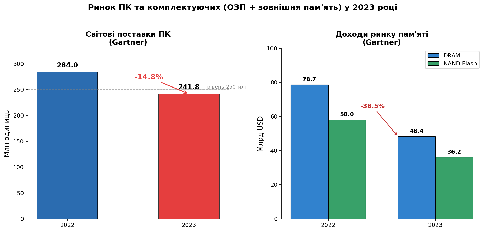
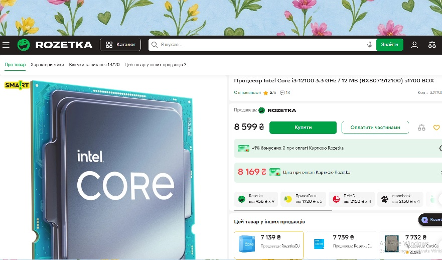
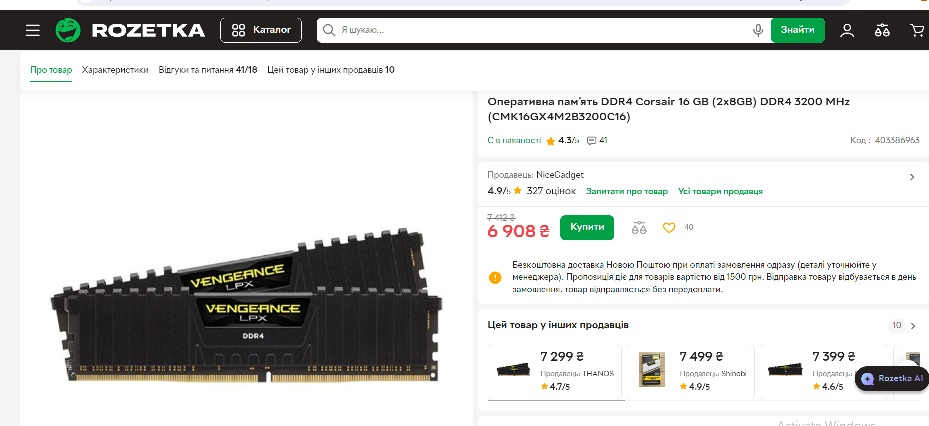
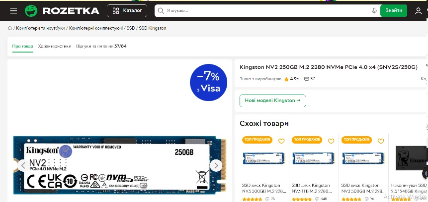
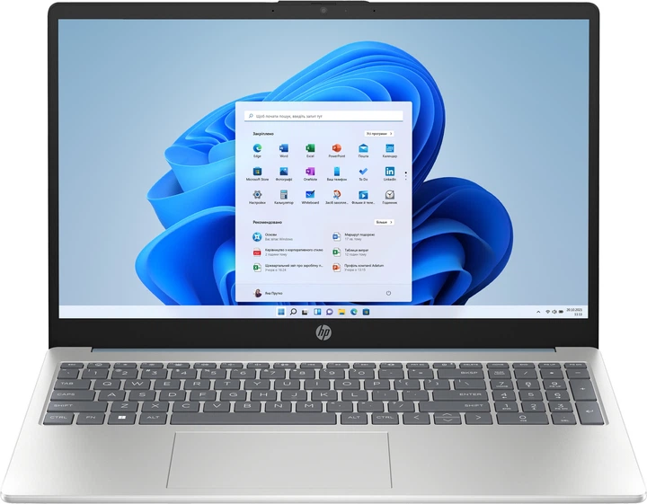
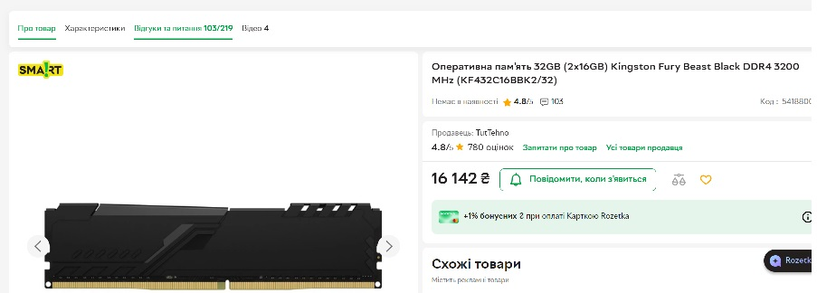
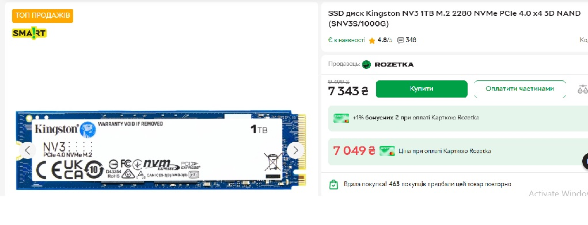
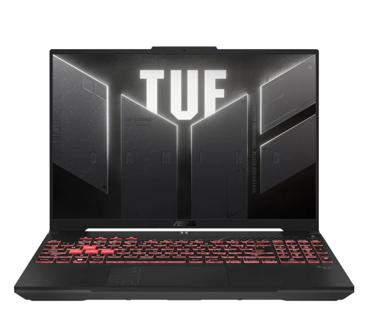
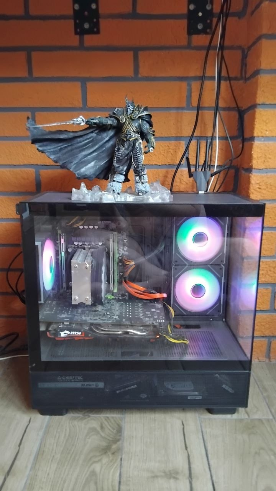

Лабораторна робота №2
Дисципліна: Архітектура комп'ютерів
Варіант: 5 (2023 р.) — Микитчак М.
← На головну1. Основні показники ринку ПК та комплектуючих у 2023 році
У 2023 році світовий ринок персональних комп’ютерів зазнав одного з найсильніших спадів за останні 15 років. За даними аналітичної компанії Gartner, глобальні поставки ПК склали 241,8 млн одиниць, що на 14,8% менше порівняно з 2022 роком (284 млн). Це найнижчий показник з 2006 року.
Частки ринку виробників ПК у 2023 році (Gartner):
- Lenovo — 24,7% (59,7 млн шт.)
- HP Inc. — 21,9% (52,9 млн шт.)
- Dell — 16,6% (40,2 млн шт.)
- Apple — 9,0% (21,9 млн шт.)
- ASUS — 7,1% (17,1 млн шт.)
- Acer — 6,6%
Оперативна пам’ять (DRAM)
Ринок пам’яті зазнав ще сильнішого падіння. За даними Gartner, доходи від DRAM у 2023 році знизилися на 38,5%
і склали близько $48,4 млрд. Загальний ринок пам’яті (DRAM + NAND) впав приблизно на 37%.
Причини — надлишок складських запасів після пандемії та слабкий попит на ПК і смартфони в першій половині року.
Зовнішня / внутрішня пам’ять (SSD + HDD, NAND Flash)
Доходи від NAND Flash зменшилися на ≈37,5% (до $36,2 млрд).
При цьому частка SSD у нових ПК продовжувала зростати — більше 55% нових комп’ютерів 2023 року поставлялися виключно з SSD.
Середня ємність клієнтських SSD зросла лише на ≈11% (один з найнижчих показників за останні роки).
Першоджерела:
• Gartner — Worldwide PC Shipments 2023
• NV Бізнес — підсумки ринку ПК 2023

Рисунок 1. Порівняння поставок ПК та доходів від DRAM/NAND у 2022–2023 рр. (на основі даних Gartner)
2. Підбір конфігурацій ПК
2.1. Конфігурації для офісу
- Процесор: Intel Core i3-12100 (4 ядра / 8 потоків)
- Материнська плата: H610M (DDR4)
- Corsair Vengeance LPX 16GB (2×8) 3200 MHz
- Накопичувач: SSD 256 ГБ NVMe M.2
- Відео: інтегрована Intel UHD Graphics 730
- Блок живлення: 400–450 Вт
- Корпус: Mini-Tower / Micro-ATX,можна також вживаний корпус використати(на ринку від 200 грн)
Призначення: робота з документами, браузером, відеоконференції, Excel.Можна додати окрему відеокарту наприклад radeon rx570 на 4 гб,зарас за них дуже низькі ціни від 2.5 тис до 4 тис грн за вживану відеокарту.

Процесор Intel Core i3-12100

ddr 4 Corsair Vengeance LPX 16GB (2×8) 3200 MHz

SSD 256 ГБ NVMe M.2
Посилання на комплектуючі:
• Процесор: Intel Core i3-12100
• ОЗП: ddr 4 Corsair Vengeance LPX 16GB (2×8) 3200 MHz (2×8)
• SSD: SSD 256 ГБ NVMe M.2
- Модель: HP Laptop 15.6 (2QHLP15AS-4/128SBLU)
- Процесор: AMD Athlon Silver 3050U
- ОЗП: 4 ГБ (просто докупляємо оперативну память на 8гб посилання на оперативку.Для роботи в офісі цього буде достатньо )
- SSD: 128 ГБ
- Екран: 15.6" IPS
- ОС: Windows 11 Home
Для офісних завдань (документи, браузер, пошта, Zoom) цього достатньо. При потребі можна додати оперативну пам’ять.

Ноутбук HP Laptop 15.6 (2QHLP15AS-4/128SBLU)
Посилання на ноутбук: HP Laptop 15.6 на Rozetka
2.2. Конфігурації для студента ІТ-спеціальності
- Процесор: Intel Core i5-12400F (6 ядер / 12 потоків)
- Материнська плата: B660 (DDR4)
- Оперативна пам’ять: 32 ГБ DDR4-3200 (2×16 ГБ) Kingston Fury Beast
- Накопичувач: 1 ТБ NVMe SSD Kingston NV3
- Відеокарта GeForce RTX 3050 8GB MSI Ventus 2X OC (RTX 3050 VENTUS 2X 8G OC) Б/В
- Блок живлення: 550–650 Вт 80+ Bronze
- Корпус: Midi-Tower ATX
Призначення: програмування, Docker, віртуальні машини, Android Studio, Visual Studio, легке редагування відео та навчання,Blender.

Процесор Intel Core i5-12400F

ОЗП 32 ГБ DDR4-3200

SSD Kingston NV3 1 ТБ
Посилання на комплектуючі:
• Процесор: Intel Core i5-12400F
• ОЗП: Kingston Fury Beast 32GB (2×16)
• SSD: Kingston NV3 1TB
• Відеокарта: RTX 3050 8GB
• Блок живлення: Cougar 550W 80+ Bronze
• Корпус: Midi-Tower ATX
- Модель: ASUS TUF Gaming A16
- Процесор: AMD Ryzen 7 7445HS
- ОЗП: 16 ГБ DDR5
- SSD: 512 ГБ NVMe
- Відеокарта: NVIDIA GeForce RTX 4050
- Екран: 16" IPS 144 Гц
Потужний ноутбук для навчання та розробки: програмування, віртуальні машини, робота з графікою та нові ігри.

ASUS TUF Gaming A16 (RTX 4050)
Посилання на ноутбук: ASUS TUF Gaming A16 RTX 4050
3. Аналіз власного комп’ютера
Комп’ютер зібраний самостійно. Основна ідея збірки — бюджетний системний блок для гри в World of Warcraft, роботи з великими обсягами файлів, а також для програм типу Blender і Visual Studio. Серверні процесори зазвичай дуже витривалі і розраховані на роботу 24/7. Після кількох років використання система добре справляється з такими іграми, як The Witcher 3, World of Warcraft та GTA 5. Замість GTX 1050 було обрано Radeon RX 570 — вона виявилася вигіднішою за ціною і показала кращу продуктивність.
- Процесор: Intel Xeon E5-2630v3 2.4-3.2 GHz, 8 ядер / потоків 16
- Материнська плата: Китайська плата х99
- Оперативна пам’ять: 40 ГБ DDR4 (б/у з AliExpress, вартість ≈ 1500 грн)2 серверні планкти по 16 гб,8 гб було замало,2 планки по 1666гц
- Відеокарта: AMD Radeon RX 570 4 ГБ (куплена ≈ 4 роки тому після спаду ринку майнінгу за 6 тис грн,зарас її ціна до 3500 грн)
- Накопичувачі: 5× HDD по 500 ГБ (б/у) — загальний обсяг 2,5 ТБ
- Блок живлення: 700 Вт
- Корпус: Micro-ATX «акваріум» (з прозорими панелями)
- Додатково: приймач 5G-інтернету
Особливості збірки:
Відеокарту Radeon RX 570 було придбано приблизно 4 роки тому, коли після буму майнінгу на ринку з’явилася велика кількість вживаних відеокарт за значно зниженими цінами. Оперативну пам’ять (40 ГБ) також взято б/у з AliExpress за дуже низьку ціну. Для зберігання великих обсягів даних (ігор) встановлено 5 жорстких дисків по 500 ГБ.
За 4 роки використання система залишається цілком придатною для користувача, який не запускає сучасні важкі ігри на кшталт S.T.A.L.K.E.R. 2. Єдине, що варто додати — SSD на 120–256 ГБ для швидшої роботи операційної системи.
За 4 роки використання,для користувача який не дуже має потреба запускати такі ігри як stalker 2,дуже нормально.Я би добавив тільки ссд на 120 гб,задля швидшої роботи операійної системи.

Висновок
У 2023 році світовий ринок персональних комп’ютерів і пам’яті пережив один із найглибших спадів за останні 15 років. Поставки ПК скоротилися на 14,8 % (до 241,8 млн одиниць), а доходи від DRAM і NAND Flash впали більш ніж на третину. При цьому SSD продовжили активно витісняти жорсткі диски, а середній обсяг оперативної пам’яті в нових системах зростав.
Підібрані конфігурації чітко демонструють різницю між вимогами до офісного комп’ютера та системи для студента ІТ-спеціальності.
Для офісних завдань достатньо відносно недорогого процесора з інтегрованою графікою та 16 ГБ ОЗП. Натомість для програмування, роботи з віртуальними машинами, графікою та сучасним програмним забезпеченням потрібні багатопотоковий процесор, 32 ГБ оперативної пам’яті, швидкий SSD і дискретна відеокарта.
Аналіз власного комп’ютера показав, що навіть бюджетна збірка на базі серверного процесора Xeon E5-2630 v3, китайської материнської плати X99, 40 ГБ оперативної пам’яті та відеокарти Radeon RX 570 після кількох років використання залишається цілком працездатною. Система успішно справляється з іграми середньої вимоги, роботою в Blender, Visual Studio та зберіганням великих обсягів даних. Єдиним суттєвим недоліком є відсутність SSD, який значно прискорив би роботу операційної системи.